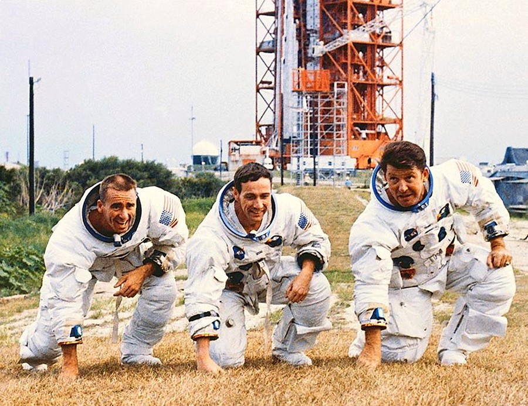

Walter Schirra was one of the original Mercury Seven astronauts and one of the most experienced astronauts in NASA history. Before Apollo 7, he flew on Mercury-Atlas 8 and Gemini 6A, becoming the first astronaut to fly in all three of America's major early space programs: Mercury, Gemini, and Apollo.
As commander of Apollo 7, Schirra was responsible for testing the redesigned Apollo Command Module following the Apollo 1 tragedy. His crew spent eleven days evaluating spacecraft systems, communications equipment, and mission procedures. The success of Apollo 7 restored confidence in the Apollo program and cleared the way for lunar missions.
Schirra remains the only astronaut to fly in Mercury, Gemini, and Apollo without ever repeating a spacecraft type. His career helped bridge every major stage of early American human spaceflight.
Donn Eisele was an Air Force pilot and aerospace engineer selected as a NASA astronaut in 1963. Apollo 7 would become his only spaceflight, but it was an important one. During the mission, Eisele helped test navigation systems, communication equipment, and spacecraft operations that future Moon missions would depend upon.
Although he did not receive the same public recognition as some Apollo astronauts, Eisele's work contributed significantly to validating the safety and reliability of the Apollo spacecraft.
Following his NASA career, Eisele continued working in aerospace and public service. His contributions helped ensure that Apollo missions could safely proceed toward the Moon.
Walter Cunningham was a Marine Corps fighter pilot, physicist, and astronaut. Although Apollo 7 did not carry a Lunar Module, NASA retained the title "Lunar Module Pilot" as part of the crew structure.
During Apollo 7, Cunningham monitored spacecraft systems and helped conduct extensive testing of onboard equipment. His scientific background made him particularly valuable when evaluating technical performance during the mission.
After leaving NASA, Cunningham became a businessman, author, and public speaker. He frequently discussed space exploration and remained one of the most recognizable members of the Apollo 7 crew.